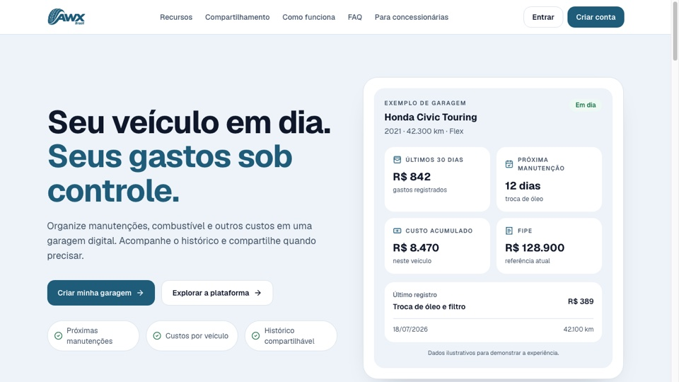

Seis cases em dois grupos: Produtos e Soluções e Engenharia. Deslize para explorar. Com o carrossel em foco, use as setas esquerda e direita, Início e Fim. Tab acessa os detalhes e links de cada projeto.

01 / FEATURED PRODUCT
PRODUTO AUTORALWEB + MOBILE
AWX Brasil
Gestão automotiva: manutenções, despesas e histórico do veículo em um só lugar.
Detalhes técnicos +
Next.jsTypeScriptPostgreSQLCapacitor
Arquitetura full stack, autenticação, autorização com RLS, modelagem do domínio automotivo, FIPE, histórico de manutenção e experiência mobile via Capacitor.
Presença digital e ferramentas de gestão para negócios locais, com QR e NFC.
Detalhes técnicos +
Next.jsSupabaseQR / NFC
Fluxo administrativo de placas, identidade visual para impressão, códigos e redirecionamentos, integração NFC, vitrine BioSites e personalização de páginas.
Uma plataforma de cursos para gestão, professores e estudantes.
Detalhes técnicos +
Next.jsSupabase AuthRLS
Gestão de conteúdo, cursos, módulos e progresso; autenticação SSR, permissões por papel, RLS, operações transacionais e fluxos de segurança para produção. Código privado.
Cuidados domiciliares apresentados com clareza, elegância e confiança.
Detalhes técnicos +
HTMLCSSJavaScriptCloudflare
Design responsivo, animação em vídeo acionada pela rolagem sem controlar quadros, acessibilidade, performance e implantação estática na Cloudflare Pages.
Gestão, automação e permissões nos bastidores de três produtos reais.
Detalhes técnicos +
Next.jsTypeScriptPostgreSQLRLS
Produção de placas na BioPlaca, operação profissional na AWX e administração acadêmica no Pugliese. Um case de engenharia que conecta interface, regras de negócio e persistência.
Entender o problema, escolher o escopo certo e criar caminhos simples para o usuário.
02
Arquitetura de verdade.
Autorização, dados, testes, estados e segurança pensados para evoluir com o negócio.
03
Entrega responsável.
Da interface ao deploy: qualidade verificável, responsividade e atenção ao uso real.
RX / DEVELOPER
03 / SOBRE MIM
Curiosidade de criador. Disciplina de engenheiro.
Sou Desenvolvedor Full Stack, com experiência na evolução de sistemas corporativos em C#/.NET e SQL Server. Hoje desenvolvo produtos próprios e para clientes com React, Next.js, TypeScript e PostgreSQL.
Gosto de unir tecnologia, experiência e regras de negócio. Para mim, uma interface só está pronta quando funciona bem no mundo real.